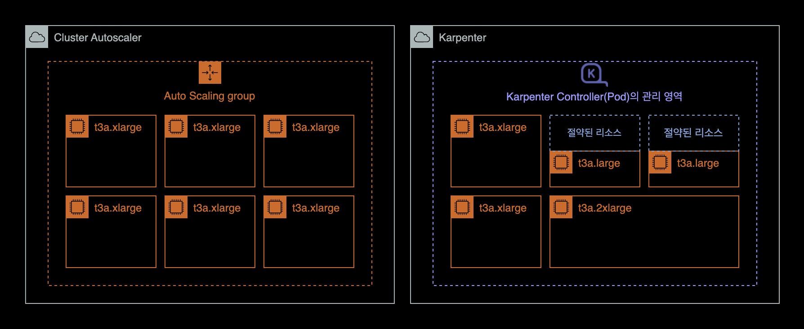
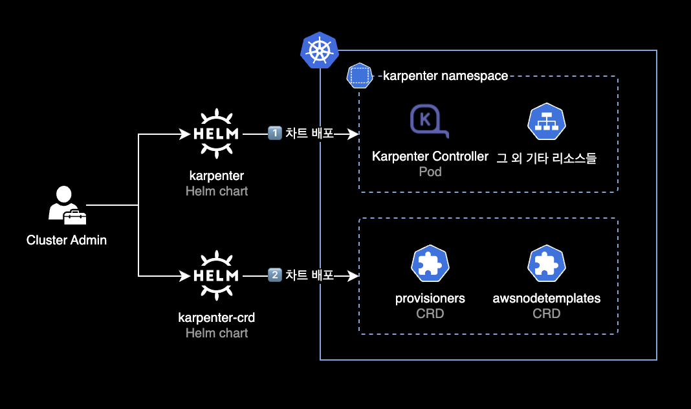
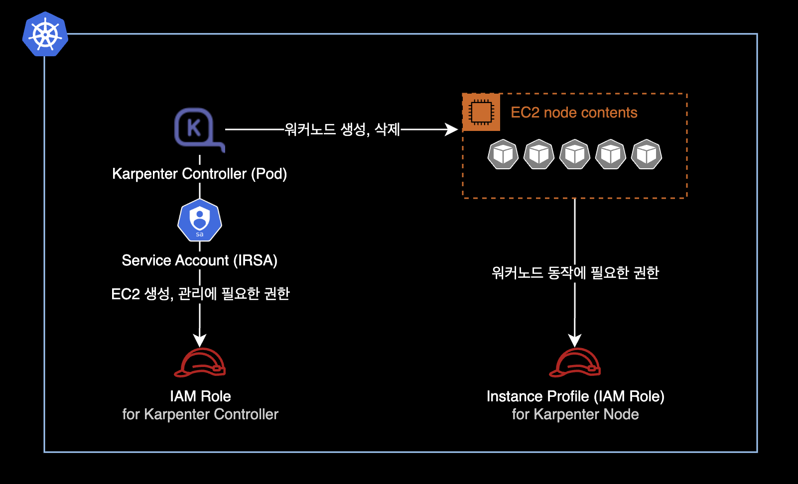

karpenter 헬름 차트 버전 업그레이드
개요
Helm 차트로 EKS 클러스터에 배포한 Karpenter v0.26.0을 v0.26.1로 업그레이드하는 방법을 소개합니다.
중요사항
이 가이드는 EKS 클러스터에 구 버전 Karpenter 헬름 차트가 이미 배포되어 있는 상황을 가정하에 설명합니다.
EKS 클러스터에 Karpenter를 최초 설치하는 상황이 아닌, 기존 Karpenter v0.26.0 헬름의 버전을 v0.26.1로 업그레이드하는 상황입니다.
배경지식
Karpenter
Karpenter는 예약할 수 없는 파드를 감지하고 새 노드를 자동으로 프로비저닝하는 오픈 소스 클러스터 오토스케일러입니다.

ASGAuto Scaling Group 기반으로 동작하는 Kubernetes Cluster Autoscaler와 다르게 Karpenter는 Karpenter Controller(Pod)가 다이렉트로 EC2 인스턴스를 생성 또는 삭제합니다.

Karpenter의 장점은 다음과 같습니다.
- Karpenter는 ASG를 사용하지 않고 Karpenter Controller(Pod)가 직접 인스턴스를 관리하므로 더 빠르게 워커 노드를 생성하고 삭제할 수 있습니다.
- Karpenter는 노드 그룹과 오토 스케일링 그룹을 사용하지 않기 때문에 클러스터 노드 관리가 더 편합니다.
- 생성이 필요한 파드들의 CPU, Memory 리소스 값을 자동 계산한 후 적절한 인스턴스 타입을 섞어서 배치하므로 EC2 비용 절감 및 유연한 리소스 확장을 할 수 있습니다.
Karpenter 관련 차트

Karpenter는 총 2개의 헬름 차트로 운영됩니다.
- karpenter : Karpenter Controller. 헬름 차트로 배포됩니다.
- karpenter-crd : Karpenter CRDs. 헬름 차트로 배포됩니다.
karpenter와 karpenter-crd 차트가 배포된 이후에는 실제로 Karpenter Controller가 사용할 provisioners와 awsnodetemplates 리소스를 kubectl apply 명령어로 배포합니다.
환경
클러스터 환경
- EKS v1.24
- 노드의 CPU 아키텍처 : AMD64 (x86_64)
- Karpenter : v0.26.0 → v0.26.1
- 헬름 차트 방식으로 설치, 업그레이드
- Karpenter CRD도 동일하게 v0.26.0 → v0.26.1로 업그레이드
로컬 환경
- OS : macOS 13.2.1 (Ventura)
- Helm : v3.11.1
Karpenter 헬름 차트 업그레이드(설치) 절차
1. 환경변수 설정
로컬 터미널에서 설치하려고 하는 Karpenter 버전 환경변수를 설정합니다.
$ KARPENTER_VERSION=v0.26.1
사용 가능한 전체 버전 목록은 Karpenter Github Releases 페이지에서 확인 가능합니다.
2. Karpenter Controller 설치
Karpenter Controller values 작성
-
이 글은 쿠버네티스 클러스터에 구 버전 Karpenter 헬름 차트가 이전에 배포되어 있다는 가정하에 설명합니다.
-
Karpenter Controller가 사용하는 IAM Role, Karpenter Controller로 생성된 노드가 사용할 Instance Profile(IAM Role) 등은 Karpenter 초기 설치 시에 생성하는 별도 과정이 필요합니다.

- Karpenter 관련 IAM Role 생성 절차는 이 글의 주제를 벗어나기 때문에 다루지 않습니다.
values.yaml 예시
제 경우 karpenter controller가 사용할 values.yaml 파일을 작성했습니다.
values.yaml로 배포할 Karpenter 버전은 v0.26.1입니다.
# -- Overrides the chart's name.
nameOverride: ""
# -- Overrides the chart's computed fullname.
fullnameOverride: ""
# -- Additional labels to add into metadata.
additionalLabels: {
app: karpenter
}
# -- Additional annotations to add into metadata.
additionalAnnotations: {}
# -- Image pull policy for Docker images.
imagePullPolicy: IfNotPresent
# -- Image pull secrets for Docker images.
imagePullSecrets: []
serviceAccount:
# -- Specifies if a ServiceAccount should be created.
create: true
# -- The name of the ServiceAccount to use.
# If not set and create is true, a name is generated using the fullname template.
name: "karpenter"
# -- Additional annotations for the ServiceAccount.
annotations: {
eks.amazonaws.com/role-arn: "arn:aws:iam::111122223333:role/KarpenterControllerRole-<YOUR_CLUSTER_NAME_HERE>"
}
# -- Specifies additional rules for the core ClusterRole.
additionalClusterRoleRules: []
serviceMonitor:
# -- Specifies whether a ServiceMonitor should be created.
enabled: false
# -- Additional labels for the ServiceMonitor.
additionalLabels: {}
# -- Endpoint configuration for the ServiceMonitor.
endpointConfig: {}
# -- Number of replicas.
replicas: 2
# -- The number of old ReplicaSets to retain to allow rollback.
revisionHistoryLimit: 10
# -- Strategy for updating the pod.
strategy:
rollingUpdate:
maxUnavailable: 1
# -- Additional labels for the pod.
podLabels: {}
# -- Additional annotations for the pod.
podAnnotations: {}
podDisruptionBudget:
name: karpenter
maxUnavailable: 1
# -- SecurityContext for the pod.
podSecurityContext:
fsGroup: 1000
# -- PriorityClass name for the pod.
priorityClassName: system-cluster-critical
# -- Override the default termination grace period for the pod.
terminationGracePeriodSeconds:
# -- Bind the pod to the host network.
# This is required when using a custom CNI.
hostNetwork: false
# -- Configure the DNS Policy for the pod
dnsPolicy: Default
# -- Configure DNS Config for the pod
dnsConfig: {}
# options:
# - name: ndots
# value: "1"
# -- Node selectors to schedule the pod to nodes with labels.
nodeSelector:
kubernetes.io/os: linux
# -- Affinity rules for scheduling the pod.
affinity:
nodeAffinity:
requiredDuringSchedulingIgnoredDuringExecution:
nodeSelectorTerms:
- matchExpressions:
- key: karpenter.sh/provisioner-name
operator: DoesNotExist
- matchExpressions:
- key: eks.amazonaws.com/nodegroup
operator: In
values:
# Karpenter Controller(Pod)는 기존 노드그룹에 배포하도록 nodeAffinity 설정
- <YOUR_NODEGROUP_NAME_HERE>
podAntiAffinity:
preferredDuringSchedulingIgnoredDuringExecution:
- weight: 100
podAffinityTerm:
labelSelector:
matchExpressions:
- key: app.kubernetes.io/instance
operator: In
values:
- karpenter
topologyKey: "kubernetes.io/hostname"
# -- topologySpreadConstraints to increase the controller resilience
topologySpreadConstraints:
- maxSkew: 1
topologyKey: topology.kubernetes.io/zone
whenUnsatisfiable: ScheduleAnyway
# -- Tolerations to allow the pod to be scheduled to nodes with taints.
tolerations:
- key: CriticalAddonsOnly
operator: Exists
# -- Additional volumes for the pod.
extraVolumes: []
# - name: aws-iam-token
# projected:
# defaultMode: 420
# sources:
# - serviceAccountToken:
# audience: sts.amazonaws.com
# expirationSeconds: 86400
# path: token
# -- Array of extra K8s manifests to deploy
extraObjects: []
#- apiVersion: karpenter.k8s.aws/v1alpha1
# kind: AWSNodeTemplate
# metadata:
# name: default
# spec:
# subnetSelector:
# karpenter.sh/discovery: {CLUSTER_NAME}
# securityGroupSelector:
# karpenter.sh/discovery: {CLUSTER_NAME}
controller:
image:
# -- Repository path to the controller image.
repository: public.ecr.aws/karpenter/controller
# -- Tag of the controller image.
tag: v0.26.1
# -- SHA256 digest of the controller image.
digest: sha256:5dfe506624961f386b68556dd1cc850bfe3a42b62d2dd5dcb8b21d1a89ec817c
# -- SecurityContext for the controller container.
securityContext: {}
# -- Additional environment variables for the controller pod.
env: []
# - name: AWS_REGION
# value: eu-west-1
envFrom: []
# -- Resources for the controller pod.
resources: {}
# We usually recommend not to specify default resources and to leave this as a conscious
# choice for the user. This also increases chances charts run on environments with little
# resources, such as Minikube. If you do want to specify resources, uncomment the following
# lines, adjust them as necessary, and remove the curly braces after 'resources:'.
# requests:
# cpu: 1
# memory: 1Gi
# limits:
# cpu: 1
# memory: 1Gi
# -- Controller outputPaths - default to stdout only
outputPaths:
- stdout
# -- Controller errorOutputPaths - default to stderr only
errorOutputPaths:
- stderr
# -- Controller log level, defaults to the global log level
logLevel: ""
# -- Controller log encoding, defaults to the global log encoding
logEncoding: ""
# -- Additional volumeMounts for the controller pod.
extraVolumeMounts: []
# - name: aws-iam-token
# mountPath: /var/run/secrets/eks.amazonaws.com/serviceaccount
# readOnly: true
# -- Additional sidecarContainer config
sidecarContainer: []
# -- Additional volumeMounts for the sidecar - this will be added to the volume mounts on top of extraVolumeMounts
sidecarVolumeMounts: []
metrics:
# -- The container port to use for metrics.
port: 8080
healthProbe:
# -- The container port to use for http health probe.
port: 8081
webhook:
logLevel: error
# -- The container port to use for the webhook.
port: 8443
# -- Global log level
logLevel: debug
# -- Gloabl log encoding
logEncoding: console
# -- Global Settings to configure Karpenter
settings:
# -- The maximum length of a batch window. The longer this is, the more pods we can consider for provisioning at one
# time which usually results in fewer but larger nodes.
batchMaxDuration: 10s
# -- The maximum amount of time with no new ending pods that if exceeded ends the current batching window. If pods arrive
# faster than this time, the batching window will be extended up to the maxDuration. If they arrive slower, the pods
# will be batched separately.
batchIdleDuration: 1s
# -- AWS-specific configuration values
aws:
# -- Cluster name.
clusterName: "<YOUR_CLUSTER_NAME>"
# -- Cluster endpoint. If not set, will be discovered during startup (EKS only)
clusterEndpoint: ""
# -- The default instance profile to use when launching nodes
defaultInstanceProfile: "KarpenterNodeInstanceProfile-<YOUR_CLUSTER_NAME_HERE>"
# -- If true then instances that support pod ENI will report a vpc.amazonaws.com/pod-eni resource
enablePodENI: false
# -- Indicates whether new nodes should use ENI-based pod density
# DEPRECATED: Use `.spec.kubeletConfiguration.maxPods` to set pod density on a per-provisioner basis
enableENILimitedPodDensity: true
# -- If true then assume we can't reach AWS services which don't have a VPC endpoint
# This also has the effect of disabling look-ups to the AWS pricing endpoint
isolatedVPC: false
# -- The node naming convention (either "ip-name" or "resource-name")
nodeNameConvention: "ip-name"
# -- The VM memory overhead as a percent that will be subtracted from the total memory for all instance types
vmMemoryOverheadPercent: 0.075
# -- interruptionQueueName is disabled if not specified. Enabling interruption handling may
# require additional permissions on the controller service account. Additional permissions are outlined in the docs.
interruptionQueueName: ""
# -- The global tags to use on all AWS infrastructure resources (launch templates, instances, etc.) across node templates
tags:
Creator: "younsung.lee@company.com"
ManagedBy: "Helm"
Maintainer: "younsung.lee@company.com"
제가 사용한 values.yaml 파일은 Karpenter 공식 깃허브에 업로드된 values.yaml을 기반으로 작성되었습니다.
Karpenter Controller 헬름 배포
Karpenter 컨트롤러를 헬름으로 설치합니다.
아래 명령어는 Karpenter 초기 설치 뿐만 아니라 버전 업그레이드 상황에서도 사용 가능합니다.
$ helm upgrade \
--install \
--namespace karpenter \
--create-namespace \
karpenter oci://public.ecr.aws/karpenter/karpenter \
--version ${KARPENTER_VERSION} \
--values values.yaml \
--wait
Pulled: public.ecr.aws/karpenter/karpenter:v0.26.1
Digest: sha256:xxxxxxxxxxxxxxxxxxxxxxxxxxxxxxxxxxxxxxxxxxxxxxxxxxxxxxxxxxxxxxxx
Release "karpenter" has been upgraded. Happy Helming!
NAME: karpenter
LAST DEPLOYED: Mon Mar 6 21:47:08 2023
NAMESPACE: karpenter
STATUS: deployed
REVISION: 5
TEST SUITE: None
위와 같이 deployed 상태이면 정상적으로 배포된 것입니다.
Karpenter Controller의 현재 상태를 확인합니다.
$ kubectl get pod \
-n karpenter \
-o wide
NAME READY STATUS RESTARTS AGE IP NODE NOMINATED NODE READINESS GATES
karpenter-7b6b6f6bfd-t2zvh 1/1 Running 0 10m xx.xxx.xxx.14 ip-xx-xxx-xxx-236.ap-northeast-2.compute.internal <none> <none>
karpenter-7b6b6f6bfd-xkc9q 1/1 Running 0 10m xx.xxx.xxx.196 ip-xx-xxx-xxx-176.ap-northeast-2.compute.internal <none> <none>
헬름 차트 기본값 기준으로 Karpenter Controller는 2개의 Pod로 배포됩니다.
Karpenter Controller Pod의 최근 로그를 확인합니다.
$ kubectl logs -f \
-n karpenter \
-c controller \
-l app.kubernetes.io/name=karpenter
3. Karpenter CRDs 설치
Karpenter Controller가 사용할 CRD 차트를 설치합니다.
아래 명령어는 Karpenter 초기 설치 뿐만 아니라 버전 업그레이드 상황에서도 사용 가능합니다.
$ helm upgrade \
--install \
--namespace karpenter \
--create-namespace \
karpenter-crd oci://public.ecr.aws/karpenter/karpenter-crd \
--version ${KARPENTER_VERSION} \
--wait
Release "karpenter" has been upgraded. Happy Helming!
Pulled: public.ecr.aws/karpenter/karpenter-crd:v0.26.1
Digest: sha256:xxxxxxxxxxxxxxxxxxxxxxxxxxxxxxxxxxxxxxxxxxxxxxxxxxxxxxxxxxxxxxxx
NAME: karpenter-crd
LAST DEPLOYED: Mon Mar 6 21:03:51 2023
NAMESPACE: karpenter
STATUS: deployed
REVISION: 2
TEST SUITE: None
위와 같이 deployed 상태이면 정상적으로 배포된 것입니다.
4. 차트 결과 확인
karpenter와 karpenter-crd 차트 정보와 현재 배포 상태를 확인합니다.
$ helm list -n karpenter
NAME NAMESPACE REVISION UPDATED STATUS CHART APP VERSION
karpenter karpenter 5 2023-03-06 21:47:08.187374 +0900 KST deployed karpenter-v0.26.1 0.26.1
karpenter-crd karpenter 2 2023-03-06 21:03:51.831199 +0900 KST deployed karpenter-crd-v0.26.1 0.26.1
Karpenter Controller와 CRD 모두 v0.26.1 버전으로 배포된 상태입니다.
5. CRD 생성
CRD 생성 결과를 확인합니다.
$ kubectl api-resources \
--categories karpenter \
-o wide
NAME SHORTNAMES APIVERSION NAMESPACED KIND VERBS CATEGORIES
awsnodetemplates karpenter.k8s.aws/v1alpha1 false AWSNodeTemplate delete,deletecollection,get,list,patch,create,update,watch karpenter
provisioners karpenter.sh/v1alpha5 false Provisioner delete,deletecollection,get,list,patch,create,update,watch karpenter
provisioners와 awsnodetemplates CRD를 사용중인 것을 확인할 수 있습니다.
Karpenter Controller Pod는 다음 2개의 Karpenter CRD를 참조해서 새 EC2 노드를 프로비저닝하게 됩니다.
- provisioners : 인스턴스 타입, kubelet 파라미터 설정, 불필요 노드 자동정리Consolidation 설정 등
- awsnodetemplates : AMI, 서브넷 지정, 보안그룹 지정 등
crds.yaml 예시
default CRD를 생성하기 위한 crds.yaml 파일을 작성합니다.
cat << EOF > crds.yaml
---
# Reference:
# https://karpenter.sh/v0.26.1/concepts/provisioners/
apiVersion: karpenter.sh/v1alpha5
kind: Provisioner
metadata:
name: default
labels:
app: karpenter
version: v0.26.1
maintainer: younsung.lee
spec:
# Enables consolidation which attempts to reduce cluster cost by both removing un-needed nodes and down-sizing those
# that can't be removed. Mutually exclusive with the ttlSecondsAfterEmpty parameter.
consolidation:
enabled: true
# If omitted, the feature is disabled and nodes will never expire. If set to less time than it requires for a node
# to become ready, the node may expire before any pods successfully start.
ttlSecondsUntilExpired: 1209600 # 14 Days = 60 * 60 * 24 * 14 Seconds;
requirements:
- key: karpenter.sh/capacity-type
operator: In
values: ["on-demand"]
- key: karpenter.k8s.aws/instance-family
operator: In
values: ["t3a"]
- key: karpenter.k8s.aws/instance-size
operator: In
values: ["nano", "micro", "small", "medium", "large", "xlarge"]
- key: kubernetes.io/os
operator: In
values: ["linux"]
- key: kubernetes.io/arch
operator: In
values: ["amd64"]
- key: topology.kubernetes.io/zone
operator: In
values: ["ap-northeast-2a", "ap-northeast-2c"]
providerRef:
name: default
---
# Reference:
# https://karpenter.sh/v0.26.1/concepts/node-templates/
apiVersion: karpenter.k8s.aws/v1alpha1
kind: AWSNodeTemplate
metadata:
name: default
labels:
app: karpenter
version: v0.26.1
maintainer: younsung.lee
spec:
amiFamily: AL2
subnetSelector:
karpenter.sh/discovery: <YOUR_CLUSTER_NAME_HERE>
securityGroupSelector:
karpenter.sh/discovery: <YOUR_CLUSTER_NAME_HERE>
EOF
EKS 클러스터에 provisioners와 awsnodetemplates를 생성합니다.
$ kubectl apply -f crds.yaml
provisioner.karpenter.sh/default created
awsnodetemplate.karpenter.k8s.aws/default created
provisioners 리소스와 awsnodetemplates 리소스가 생성되었습니다.
참고로 provisioners와 awsnodetemplates는 네임스페이스 단위에 속하지 않는 리소스입니다.
kubectl get 명령어로 현재 사용중인 Karpenter CRD 목록을 확인할 수 있습니다.
$ kubectl get provisioners,awsnodetemplates
NAME AGE
provisioner.karpenter.sh/default 68m
NAME AGE
awsnodetemplate.karpenter.k8s.aws/default 68m
6. 모니터링
Karpenter Controller 로그 모니터링
이후 약 10분 이상 Karpenter 컨트롤러의 로그를 모니터링합니다.
$ kubectl logs -f \
-n karpenter \
-c controller \
-l app.kubernetes.io/name=karpenter
정상적인 상황의 경우, DEBUG, INFO 레벨의 로그만 출력됩니다.
IAM 권한 문제, 설정 오류 등으로 인한 ERROR 레벨의 로그가 지속적으로 출력되는 경우 해당 원인을 찾아서 해결해야 Karpenter Controller가 제대로 동작합니다.
노드 상태 모니터링
전체 워커노드 운영 현황도 같이 모니터링합니다.
$ kubectl get node -L beta.kubernetes.io/instance-type
NAME STATUS ROLES AGE VERSION INSTANCE-TYPE
ip-xx-xxx-xxx-132.ap-northeast-2.compute.internal Ready <none> 13m v1.24.10-eks-48e63af t3a.medium
ip-xx-xxx-xxx-176.ap-northeast-2.compute.internal Ready <none> 4d4h v1.24.9-eks-49d8fe8 t3a.medium
ip-xx-xxx-xxx-171.ap-northeast-2.compute.internal Ready <none> 13m v1.24.10-eks-48e63af t3a.xlarge
ip-xx-xxx-xxx-236.ap-northeast-2.compute.internal Ready <none> 4d4h v1.24.9-eks-49d8fe8 t3a.medium
결과
기존에 헬름 차트로 배포해서 사용중이던 Karpenter v0.26.0를 v0.26.1로 버전 업그레이드 완료했습니다.
$ helm list -n karpenter
NAME NAMESPACE REVISION UPDATED STATUS CHART APP VERSION
karpenter karpenter 5 2023-03-06 21:47:08.187374 +0900 KST deployed karpenter-v0.26.1 0.26.1
karpenter-crd karpenter 2 2023-03-06 21:03:51.831199 +0900 KST deployed karpenter-crd-v0.26.1 0.26.1
참고자료
Karpenter v0.26.1 버전 업그레이드 가이드
Karpenter 공식문서
Github - Karpenter
karpenter 차트
Github - Karpenter CRD
karpenter-crd 차트